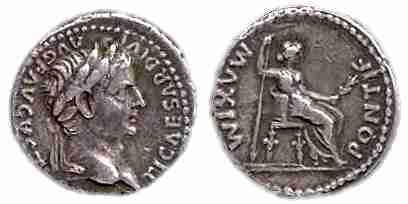
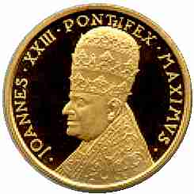
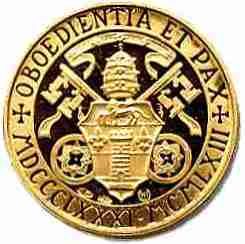

The High Priest in Hebrews
Note the following verses from the book of Hebrews, first in the Latin Vulgate and then the King James:
Hebrews 2:17 Unde debuit per omnia fratribus similari, ut misericors fieret, et fidelis pontifex ad Deum, ut repropitiaret delicta populi.
Heb 2:17 Wherefore in all things it behoved him to be made like unto his brethren, that he might be a merciful and faithful high priest in things pertaining to God, to make reconciliation for the sins of the people.
Hebrews 3:1 Unde, fratres sancti, vocationis cælestis participes, considerate Apostolum, et pontificem confessionis nostræ Jesum :
Heb 3:1 Wherefore, holy brethren, partakers of the heavenly calling, consider the Apostle and High Priest of our profession, Christ Jesus;
Hebrews 4:15 Non enim habemus pontificem qui non possit compati infirmitatibus nostris : tentatum autem per omnia pro similitudine absque peccato.
Heb 4:15 For we have not an high priest which cannot be touched with the feeling of our infirmities; but was in all points tempted like as we are, yet without sin.
Hebrews 5:1 Omnis namque pontifex ex hominibus assumptus, pro hominibus constituitur in iis quæ sunt ad Deum, ut offerat dona, et sacrificia pro peccatis :
Heb 5:1 For every high priest taken from among men is ordained for men in things pertaining to God, that he may offer both gifts and sacrifices for sins:
Hebrews 5:5 Sic et Christus non semetipsum clarificavit ut pontifex fieret : sed qui locutus est ad eum : Filius meus es tu, ego hodie genui te.
Heb 5:5 So also Christ glorified not himself to be made an high priest; but he that said unto him, Thou art my Son, to day have I begotten thee.
Hebrews 5:10 appellatus a Deo pontifex juxta ordinem Melchisedech.
Heb 5:10 Called of God an high priest after the order of Melchisedec.
Hebrews 6:20 ubi præcursor pro nobis introivit Jesus, secundum ordinem Melchisedech pontifex factus in æternum.
Heb 6:20 Whither the forerunner is for us entered, even Jesus, made an high priest for ever after the order of Melchisedec.
Hebrews 7:26 Talis enim decebat ut nobis esset pontifex, sanctus, innocens, impollutus, segregatus a peccatoribus, et excelsior cælis factus :
Heb 7:26 For such an high priest became us, who is holy, harmless, undefiled, separate from sinners, and made higher than the heavens;
Hebrews 8:1 Capitulum autem super ea quæ dicuntur: Talem habemus pontificem, qui consedit in dextera sedis magnitudinis in cælis,
Heb 8:1 Now of the things which we have spoken this is the sum: We have such an high priest, who is set on the right hand of the throne of the Majesty in the heavens;
Hebrews 8:3 Omnis enim pontifex ad offerendum munera, et hostias constituitur : unde necesse est et hunc habere aliquid, quod offerat.
Heb 8:3 For every high priest is ordained to offer gifts and sacrifices: wherefore it is of necessity that this man have somewhat also to offer.
Hebrews 9:7 in secundo autem semel in anno solus pontifex non sine sanguine, quem offert pro sua et populi ignorantia :
Heb 9:7 But into the second went the high priest alone once every year, not without blood, which he offered for himself, and for the errors of the people:
Hebrews 9:11 Christus autem assistens pontifex futurorum bonorum, per amplius et perfectius tabernaculum, non manufactum, id est, non hujus creationis :
Heb 9:11 But Christ being come an high priest of good things to come, by a greater and more perfect tabernacle, not made with hands, that is to say, not of this building;
Hebrews 9:25 neque ut sæpe offerat semetipsum, quemadmodum pontifex intrat in Sancta per singulos annos in sanguine alieno :
Heb 9:25 Nor yet that he should offer himself often, as the high priest entereth into the holy place every year with blood of others;
Hebrews 13:11 Quorum enim animalium infertur sanguis pro peccato in Sancta per pontificem, horum corpora cremantur extra castra.
Heb 13:11 For the bodies of those beasts, whose blood is brought into the sanctuary by the high priest for sin, are burned without the camp.
Pontifex Maximus
As shown above, in the Latin Vulgate (the official Bible of the Catholic Church), the word used in Hebrews for both the high priest of the Levitical priesthood, and the high priesthood of our Lord Jesus Christ, is either pontifex or pontificem. In contrast, the Pope of the Roman Catholic Church is officially titled Pontifex Maximus, which then obviously means the "highest high priest", placing the pope above the high priesthood of our Lord Jesus Christ. That is blasphemy and Antichrist!
Jacob's Ladder
Gen 28:10 And Jacob went out from Beersheba, and went toward Haran.
Gen 28:11 And he lighted upon a certain place, and tarried there all night, because the sun was set; and he took of the stones of that place, and put them for his pillows, and lay down in that place to sleep.
Gen 28:12 And he dreamed, and behold a ladder set up on the earth, and the top of it reached to heaven: and behold the angels of God ascending and descending on it.
Gen 28:13 And, behold, the LORD stood above it, and said, I am the LORD God of Abraham thy father, and the God of Isaac: the land whereon thou liest, to thee will I give it, and to thy seed;
Gen 28:14 And thy seed shall be as the dust of the earth, and thou shalt spread abroad to the west, and to the east, and to the north, and to the south: and in thee and in thy seed shall all the families of the earth be blessed.
Gen 28:15 And, behold, I am with thee, and will keep thee in all places whither thou goest, and will bring thee again into this land; for I will not leave thee, until I have done that which I have spoken to thee of.
Gen 28:16 And Jacob awaked out of his sleep, and he said, Surely the LORD is in this place; and I knew it not.Note that the Lord God of Israel was at the top of this ladder that extended down to Earth (v. 13). The Gospel of John explains Jacob's ladder:
John 1:51 And he saith unto him, Verily, verily, I say unto you, Hereafter ye shall see heaven open, and the angels of God ascending and descending upon the Son of man.
Jacob's ladder was symbolic of Jesus, the incarnate Son of God, fully man and fully God. Jesus is the top of the ladder in heaven because He is fully God, and He is the bottom of the ladder on Earth because He took on human flesh, He is fully man. Jesus is therefore the true living "bridge" between mankind and God.
The apparent literal meaning of the pagan title Pontifex Maximus is Maximum Bridge Builder, denoting the Roman Caesar was the highest priest, the supreme bridge between the gods and man, because the Caesars also claimed to be a god on Earth. Emperor Gratian declined the title of Pontifex Maximus in 381 A.D., and it was gradually adopted by the Bishop of Rome, who claims to take the place of God on Earth (Pope Leo XIII, Apostolic Exhortation Praeclara Gratulationis Publicae (The Reunion of Christendom), dated June 20, 1894, trans. in The Great Encyclical Letters of Pope Leo XIII (New York: Benziger, 1903), paragraph 5, page 304).

Above you see a Denarius or "Tribute Penny" minted at Lugdunum (Lyon) during the reign of Emperor Tiberius (14-37 A.D.) The obverse with Tiberius' bust is inscribed TI CAESAR DIVI AVG F AVGVSTVS. The reverse is inscribed PONTIF MAXIM and depicts the emperor's mother Livia as Pax (peace) holding an olive-branch and long vertical scepter. This is the type of coin mentioned in Matt 22:19, Mark 12:15, and Luke 20:24. If someone had asked the apostle Peter who the "Pontifex Maximus" was, he would likely have shown them a tribute penny like that above and replied "The Roman Emperor". Peter would not have known of any other application of the title.
Now below is a very similar papal medal proclaiming Pope John XXIII, the claimed successor to Peter, to be the reigning "Pontifex Maximus" on the front (appropriately wearing the triregno crown) and "Obedience and Peace" on the reverse.


It is also worth noting that Catholics also call the pope "Holy Father", when there is only one use of that phrase in all of scripture, in reference to God the Father:
John 17:11 And now I am no more in the world, but these are in the world, and I come to thee. Holy Father, keep through thine own name those whom thou hast given me, that they may be one, as we are.
Mat 23:9 And call no man your father upon the earth: for one is your Father, which is in heaven.
http://biblelight.net